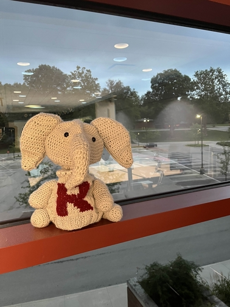

Anthony Mui
muian@rose-hulman.edu
Hey, I'm Anthony
I am a Computer Science Graduate at Rose-Hulman Institute of Technology. Also I have a Minoring in Math. My interest are mostly in programming, DIY projects, and Electronics.
Click here for my resume!
(here are my dotfiles configs if you are interested)Experience
Backend & Infrastructure Engineer
- Designed and built a full-stack Catan game with C++ backend and Protocol Buffers for communication with the frontend.
- Deployed and maintained company website, implementing custom infrastructure and hosting.
Robotics Researcher for the Blossom HCI | 2024-2025
- github
- Robotics research about HCI. Originally developed by CMU: blossom is an open-source programmable animation that can interact with humans. For our implementation, we added gesture recognition to be able to play any animation given a specific hand gesture and a simple chatbot program using OpenAi's speech2text, gpt4, and text2speech. 
Rose-Hulman Academic Assistant | 2021 - 2025
- Create internal tooling using a bash script to automate grading processes.
- Set up online ubuntu server automatic grading system.
Skills
Programming Languages: Python, Java, Scala, Kotlin, C/C++, TypeScript, HTML, CSS, SQL, Scheme, Matlab
Frameworks: OpenCV, ROS, Docker, Node.js, Django, TensorFlow, PyTorch, pandas, firebase
Projects
Thesis: Program equivalence based autograder
I helped setup the autograder on Gradescope_Setup for the Operating Systems class. The future plan is to implement a lexical parser to help speed up grading.
Here is the github: https://github.com/agmui/Gradescope_SetupStackScan: Website tech stack tracker
A website that shows stats about the most commonly used tech stacks used on websites: This is done by web scrapers, which are stored in an SQL database. The whole website is hosted on Firebase and the front end is done with Next.js with Prisma to communicate with the SQL database.
Notion2Webpage CMS deployment
websiteConverts Notion pages into markdown and then applies a Hugo theme to then be deployed onto GitHub pages. The whole process is automated with Github actions pulling from the notion API every hour. This also supports multiple levels of sub directories which other implementations don't support.
Robomasters Embed development and CV/AI
What is
Robomasters?:
Robomasters is a robotics competition for college students.
Teams each bring three robots to fight 3v3 in a FPS area.
The goal is to shoot the enemy team's base and defeat it.
As software lead I oversee and teach three sub teams
- Embedded team: We mainly program on our custom board driven by the pi pico. Reading and controlling an array of sensors on our custom board designed around the pi pico.
- CV team: the auto-aiming and automatic movement of the robots. We use a Nvidia Jetson Xavier and YoloV8 for our auto-aiming. We also have a robot running fully autonomous with ROS integration.
-
Sentry team:
Used the ROS2 and Nav2 framework to autonomously navigate the sentry on the field
https://github.com/Thornbots/CV
Robot codebase
Other Projects
-
Robomasters:
- rm pico dev
- Robomasters Game
-
School projects:
- custom RISC-V processor
- KD trees collision detection demo
- Custom Raytracer
- os heapman2
- scheme interpreter
-
random stuff repo
- Collatz Conjecture visualizer
- Conway's game of life
- LM game
- Langton's Ant
- Snake
- Boids: bird flock simulation
- splines c++
- Digital Electronics: Arduino projects and soldering
People referenced from for this website
Links: